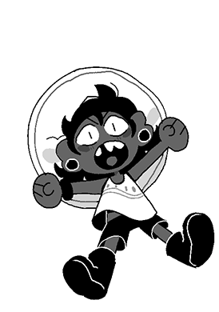

Boniface (Bonnie for shot), one of the saviors of Vanguarde, pouts as they watch Siffrin and Isabeau, two other saviors of Vanguarde, recite the Vanguardian alphabet starting from the letter I.
When asked why they're so upset, Bonnie yelled "I used my ESP for this! I made sure nobody would interrupt! I didn't interrupt! I even TOLD these two to NOT recite the CRABBING alphabet!!! And what do they do!?" Bonnie then pouted. "I bet if someone 'clicked' on them, whatever that means, then they'd suddenly start reciting it again like the CRABS they are!"
Bonnie then mumbled something about "This better not be what I need to do because then we're stuck forever..." and then walked over to speak to the Head Housemaiden. More in 10!
Frankie, resident fanfiction writer of New Wirral, who spends her free time either doing Ranger stuff, writing Blood Puncher fanfiction, or writing RPF about Cass' sex life, was recently discovered to not actually have pink eyes, but rather brown eyes that turn pink whenever she's excited.
When asked about this trait and why she didn't feel the need to show it off like she does anything magical, Frankie responded "I mean, it's normal where I'm from![...] It's like if Viola was from a world where everyone spoke like that- SHE IS!?"
Frankie was last seen showing off her magic eyeballs to everyone in New Wirral.
Fucked-Up Not-Frankie (FUNF for short): Follow my lead, partner-
Interviewer (I for short): We're not here to fight.
FUNF:...What? Is this a trick? Or... are you a new ally?
I: We just want to interview you.
FUNF: Interview? Oh! But I haven't defeated any great evils yet!
I: We know. First question: How do you want to be referred as?
FUNF:...?
I: Like... I'm not sure you're aware of this, really, but you're not the real Frankie. The real Frankie is showing off her magical eyeballs to everyone in New Wirral right now.
FUNF: What a shocking reveal! The heroine learns the truth- she is a copy, a clone!
I: So...
FUNF: How will she bounce back from this reveal? How? How? How?
I: Put- Put the recorder down! We're still interviewing!
Magikrab (M for short): WHAT THE FUCK ARE YOU DOING!
M: Are you TRYING to mess up the fucking canon?!
M: Letting these fragments self-actualize is the FASTEST way to start fucking the very fabric of reality up!!!
I:... Huh. You say fuck.
I: I was expecting you to say "crab" instead of fuck for some reason.
M: That's fucking stupid. Why would I-
Just then, a Kid burst in!
Child (C for short): SHUT YOUR CRAB FACE!!! STUPID CRAB!!! YOU'RE JUST ANGRY BECAUSE YOU'RE STUPID AND YOU CAN'T CHANGE!!!
(The child in question)
I:... are you... completely monochrome?
C: I don't know what that word MEANS! Also, WHY THE CRAB IS EVERYTHING WEIRD SHADES!?
I: This interview is over.
The Interviewer then ran out of the train, and has now been banned from the Mer-line by Magikrab and also the Mer-line itself. The Kid, whose name is Bonnie, however, has been permitted to beat up the Fucked-Up Not-People there, but is discouraged from using their fists.